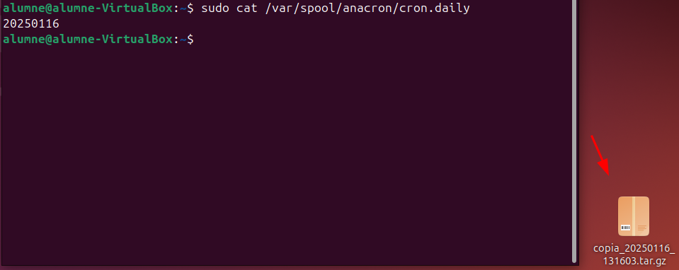

Automatització amb Scripts, Cron i Anacron
Automatització amb Scripts i Cron i Anacron
En aquest apartat es descriuen dos processos importants per automatitzar tasques en sistemes operatius basats en Linux: Cron i Anacron. Aquests sistemes permeten programar l'execució d'scripts i tasques de manera recurrent, tot i que presenten algunes diferències que es detallen a continuació.
Crontab vs Anacron
Cron i Anacron són eines que s'utilitzen per a l'automatització de tasques, i mentre que antigament funcionaven de manera separada, avui dia treballen conjuntament en molts sistemes operatius moderns, com Ubuntu.
Quan utilitzar Cron o Anacron?
-
Cron: Es fa servir quan els ordinadors estan encesos de manera constant i volem que les tasques es duguin a terme a hores concretes, com per exemple: "executar aquest script cada dia a les 12:00".
-
Anacron: Ideal per a sistemes que no estan sempre en funcionament. Permet assegurar-se que una tasca es realitzi encara que el sistema hagi estat apagat durant el moment programat.
Usos generals
| Eina | Cas d'ús |
|---|---|
| Cron | Tasques específiques d'usuari o programades a hores concretes. |
| Anacron | Tasques de manteniment general del sistema operatiu, com neteja i actualitzacions. |
Funcionament teòric
Cron:
- Si volem programar tasques globals per a tots els usuaris, editem el fitxer:
/etc/crontab. - Si volem programar tasques específiques per a un usuari, utilitzem:
crontab -e -u <usuari>.
Anacron:
- S'utilitza per programar tasques que han de garantir la seva execució, independentment de si el sistema estava apagat durant l'hora programada.
- Els arxius rellevants inclouen:
/etc/anacrontab: Configuració principal d'Anacron./var/spool/anacron/: Conté la informació sobre les tasques ja executades.- Directoris com
/etc/cron.daily/,/etc/cron.weekly/,/etc/cron.monthly/.
Taula comparativa: Cron vs Anacron
| Característica | Cron | Anacron |
|---|---|---|
| Execució programada | A hores i dates concretes. | Dins d'un període flexible (diari, setmanal, mensual). |
| Necessitat d'estar encesos | Requereix que el sistema estigui en funcionament en el moment exacte de l'execució. | No requereix que el sistema estigui encesos; executa tasques pendents quan es reinicia. |
| Configuració principal | /etc/crontab i fitxers personals amb crontab -e. |
/etc/anacrontab. |
| Freqüència típica | Hores específiques, segons l'horari definit. | Tasques diàries, setmanals o mensuals. |
| Ús principal | Automatització de tasques específiques per a usuaris o processos puntuals. | Tasques de manteniment i gestió del sistema operatiu. |
| Adequat per a | Sistemes sempre en funcionament (servidors, per exemple). | Sistemes que poden estar apagats durant períodes de temps (portàtils, ordinadors personals). |
| Ubicació de tasques | /etc/crontab, /etc/cron.d/, crontab -e. |
/etc/anacrontab, /var/spool/anacron/, /etc/cron.daily/, etc. |
Arxius d'interès
Cron:
/etc/crontab: Fitxer principal per a configurar tasques globals./etc/cron.d/: Directori per afegir tasques personalitzades.crontab -e: Per configurar tasques específiques d'usuari.
Anacron:
/etc/anacrontab: Fitxer principal de configuració./var/spool/anacron/: Conté registres de tasques ja realitzades.
Directoris:
/etc/cron.daily/: Tasques diàries./etc/cron.weekly/: Tasques setmanals./etc/cron.monthly/: Tasques mensuals.
Exemple pràctic
Per aquest exemple, crearem dos fitxers dins del directori /home/Imágenes per verificar que l'script funciona correctament.
Aquest script s'utilitza per crear una còpia de seguretat comprimida del directori d'imatges ubicat a /home/alumne/Imágenes. La còpia es guarda al directori Escritorio amb un nom que inclou una marca de temps per identificar-la.
Explicació de la captura
-
Inicialització del script
L'script està preparat per executar-se amb el shellbash, tal com indica la primera línia (#!/bin/bash). -
Generació de la marca de temps (
TIMESTAMP)
Es genera una cadena amb la data i hora actuals en el formatYYYYMMDD_HHMMSS. Aquesta marca de temps permet crear noms únics per a cada còpia de seguretat. -
Creació de la còpia de seguretat
S'utilitza una eina per empaquetar i comprimir el directori/home/alumne/Imágenes. El resultat és un fitxer comprimit (.tar.gz) que es guarda al directori/home/alumne/Escritorioamb un nom que inclou la marca de temps (copia_YYYYMMDD_HHMMSS.tar.gz).
Exemple de resultat
Si l'script s'executa el 16 de gener de 2025 a les 13:30:45, el fitxer resultant tindria el següent nom:
/home/alumne/Escritorio/copia_20250116_133045.tar.gz.
Assignem permisos d'execució al fitxer copia.sh amb la comanda chmod +x copia.sh i l'executem manualment per verificar el seu funcionament.

Automatització del procés amb crontab
Per automatitzar l'execució del nostre script copia.sh, utilitzarem el programador de tasques crontab. A continuació, es detallen els passos per configurar-ho:
Editar el fitxer crontab del sistema
Obrim el fitxer de configuració del crontab amb permisos d'administrador per afegir la tasca programada:
sudo nano /etc/crontab
Afegir la línia de programació
Afegim la següent línia al final del fitxer:
05 13 16 1 * /home/alumne/copia.sh
Aquesta línia indica que l'script copia.sh s'executarà automàticament segons la programació especificada.
Explicació de la sintaxi
Els camps de la línia afegida al crontab tenen el següent significat:
- 05: Minut en què s'executarà la tasca (05 minuts).
- 13: Hora del dia (13:00 h).
- 16: Dia del mes (16 de gener en aquest cas).
- 1: Mes de l'any (gener).
- *: Qualsevol dia de la setmana (de dilluns a diumenge).
En el nostre cas, això significa que l'script s'executarà el 16 de gener de cada any a les 13:05, independentment del dia de la setmana.
Guardar i sortir
Després d'afegir la línia, guardem els canvis i sortim de l'editor.
Esperem uns minuts i podem observar que s'ha realitzat la copia dels arxius.
Configuració amb Anacron
A continuació, configurarem el nostre script perquè s'executi automàticament amb Anacron. Aquesta eina és ideal per a tasques periòdiques en sistemes que no estan en funcionament constant.
Moure el script a /etc/cron.daily
Per començar, copiem el nostre script a la carpeta designada per a tasques diàries:
- Accedim al directori
/etc/cron.daily/. - Copiem el fitxer
copia.shdes de la seva ubicació original.
Nota: El fitxer no pot tenir extensions, així que canviem el nom per eliminar-la.
Exemple:
- Original:
copia.sh - Renombrat:
copia
Assegurar que s'executa avui mateix
Per comprovar que l'script s'executa correctament, editem el fitxer de registre d'Anacron per a tasques diàries:
- Obrim el fitxer /var/spool/anacron/cron.daily i eliminem les dades que hi trobem.
Configuració del temps d'execució
Per ajustar el temps d'execució de la tasca diària, editem el fitxer de configuració d'Anacron:
- Obrim /etc/anacrontab i localitzem la línia corresponent a les tasques diàries.
- Modifiquem el segon valor (temps en minuts) a 1 si volem que la tasca s'executi només un minut després d'iniciar el sistema.
Per defecte, Anacron espera 5 minuts, però es pot ajustar segons les preferències. Jo he triat 1 minut, perquè "Ain't Nobody Got Time For That!"
Amb això, Anacron s'encarregarà d'executar l'script diàriament quan l'ordinador estigui en funcionament.
Reiniciem l'ordinador, esperem un minut i verifiquem que el procés s'ha executat correctament.
